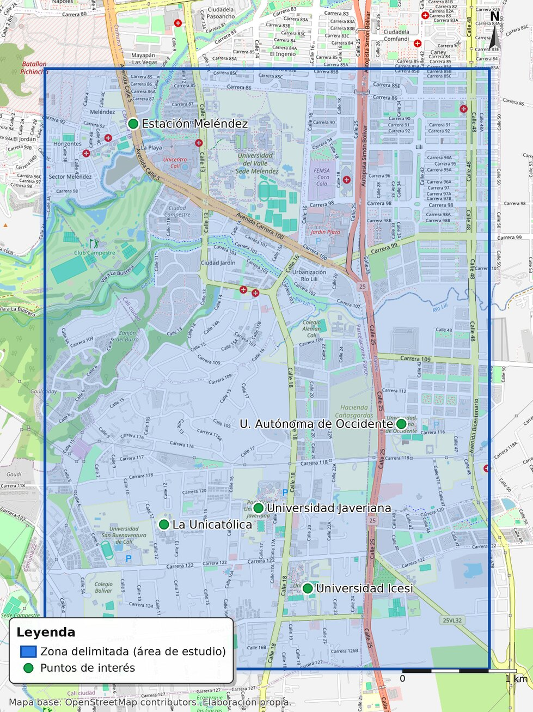

Diagnóstico comunitario: encuesta de movilidad
Encuesta de movilidad eléctrica aplicada entre el 14 y el 18 de septiembre de 2026 a la comunidad universitaria del corredor del sur de Cali (Universidad ICESI y Universidad Autónoma de Occidente), difundida con código QR. Se obtuvieron 21 respuestas de personas de 17 a 43 años (promedio 21,5). Sus resultados son la línea base del proyecto.
Movilidad eléctrica en el corredor
16 de las 21 personas encuestadas ya se movilizan en un vehículo eléctrico: patineta, bicicleta, motocicleta o carro eléctrico. Las otras 5 todavía no.
Disposición a usar la aplicación
Sobre quienes ya usan movilidad eléctrica: 15 de 16 respondieron «sí, me interesaría mucho» tanto a la función de autonomía (¿podré completar el trayecto con la batería que queda?) como a la de rutas seguras.
Frecuencia de viaje
¿Cuántas veces por semana va a la universidad?
88 % viaja 3 o más veces por semana: el trayecto es recurrente y la autonomía importa todos los días.
Distancia casa–universidad
Distancia aproximada por trayecto.
63 % recorre entre 1 y 5 km: distancias cortas, donde la micromovilidad eléctrica compite de frente con el carro y el transporte público.
Vehículo que usa
Medio de transporte principal.
La patineta eléctrica es el vehículo más frecuente, seguida de la moto, el carro y la bicicleta eléctrica.
Duración del trayecto
Tiempo de casa a la universidad.
82 % completa el trayecto en menos de 30 minutos.
Qué les preocupa de dar el paso
Nivel de preocupación declarado, escala de 1 a 5.
La seguridad vial y el quedarse sin batería preocupan casi en el mismo nivel: son exactamente las dos funciones que integra la plataforma.
Quiénes respondieron
2 universidades del corredor, edades entre 17 y 43 años (promedio 21,5).
| Indicador medido | Frecuencia | Porcentaje |
|---|
Las cifras de este tablero coinciden con las publicadas en la sección de metodología de las propuestas de los dos módulos. El porcentaje se calcula sobre la base indicada en cada fila, porque las preguntas de interés y de hábitos de viaje solo aplican a quienes ya usan un vehículo eléctrico (16 de 21 personas).
Hallazgos cualitativos
Ocho de las 16 personas que usan movilidad eléctrica dejaron una sugerencia abierta sobre qué debería hacer la aplicación. Se agrupan en cuatro temas y se citan de forma anónima: el tablero es público y no publica ningún dato personal de las personas encuestadas.
Sería bueno que la aplicación te diga qué zonas están muy congestionadas o carreteras con muchos huecos… Tipo lo que hace Waze.
Que sea como un Waze, pero para patinetas: que me diga por dónde puedo meterme para llegar a un lugar de forma segura.
Evitar autopistas grandes.
Que tenga una opción para planear rutas que solo vayan por rutas con carril para bicicletas.
Poner puntos de carga para las patinetas.
No solo me diga si puedo completar un recorrido, sino que también me indique cuándo debería revisarla o hacerle mantenimiento… si durante un recorrido el consumo de batería es mayor al esperado, avisarme con anticipación para evitar quedarme varada.
Ninguna de las sugerencias pide «la ruta más corta»: todas piden una ruta en la que se pueda llegar. Ese es el criterio que el proyecto adopta como viabilidad de ruta —seguridad del recorrido y energía suficiente— y no la distancia mínima.
Las citas corresponden a la aplicación de septiembre de 2026 y se reproducen con ajustes mínimos de puntuación y ortografía; no incluyen nombres, correos ni teléfonos.
Sector de estudio
El proyecto se acota al corredor universitario del sur de Cali, donde se concentran los desplazamientos cortos en micromovilidad eléctrica y las universidades que participaron en el diagnóstico. La delimitación fija el área en la que se levanta el catálogo de condiciones de la vía y se prueban las rutas.

Arrastra para recorrer el sector, usa + / − para acercar y toca un punto para ver su ficha. El recuadro violeta es el área de estudio: ≈ 4,0 × 5,3 km del corredor universitario del sur de Cali.
Qué delimita el mapa
La zona violeta es el área de estudio sobre la que se construye el catálogo georreferenciado de condiciones de la vía. Los puntos marcan los nodos de interés del corredor: las universidades del sector y los puntos de referencia que se usan para ubicar el levantamiento.
Metodología en seis fases
Trabajo por fases con un producto verificable en cada una. La metodología es iterativa: si la validación no se cumple, se reabre la fase anterior en lugar de avanzar.
Iteración: la validación de resultados reabre el diseño y la implementación cuando el producto no cumple el hito.
La aplicación: pantallas de diseño
Así se ve Ruta CCV en el teléfono. Las nueve pantallas muestran el recorrido completo de un viaje: se elige el vehículo, se ingresa la carga de la batería, la app propone rutas que evitan las zonas de riesgo y que caben en la autonomía disponible, y al final se ve el resumen. Todas están hechas con la identidad visual del proyecto y son la base de las diapositivas y del video.
Son pantallas de diseño con datos de ejemplo —bicicleta eléctrica de 26 km de autonomía con 68 % de carga—; todavía no son la aplicación funcionando. Toca una pantalla para verla completa.